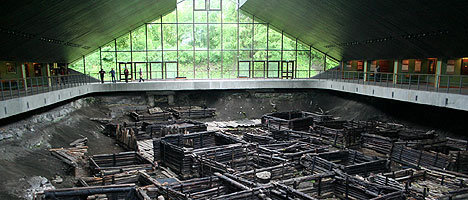
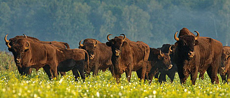
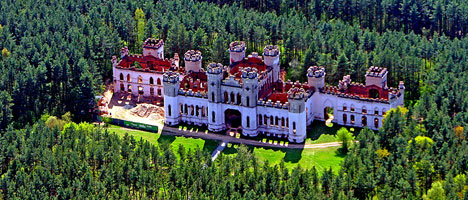

BREST
La ciudad de Berestye que se extiende a lo largo del río Bug se mencionó por primera vez en El cuento de los años pasados en 1019. Durante siglos, Brest, que se llama la entrada occidental a Bielorrusia, ha sido parte de diferentes estados, destruida y reconstruida nuevamente. De ahí sus numerosas características: desde el antiguo asentamiento de Berestye hasta los edificios bien cuidados del Brest-Litovsk imperial y el Brest-on-the-Bug polaco.

Dominique: Hoy la ciudad es un popular destino turístico. Los puntos de referencia de la ciudad incluyen la estación de ferrocarril construida a la orden de Alejandro II (se la consideraba la más grande y hermosa del Imperio ruso); la calle peatonal Sovetskaya conocida por las antiguas farolas de gas que se iluminan con un farolero todas las noches; Gogol Street, donde puedes conocer muchos personajes de las obras inmortales del escritor; Brest Millennium Monument, un alto relieve circular que representa personalidades históricas e imágenes generalizadas de los residentes de la ciudad bajo la tapa del ángel guardián; Museo del ferrocarril, que fue reabierto después de renovaciones el día del 999 aniversario de Brest.
El único museo de Europa de una ciudad medieval de Europa del Este se encuentra en el territorio de la Fortaleza de Brest, donde se fundó la antigua ciudad de Berestye muchos siglos antes de la construcción de la fortaleza. En 1968, los científicos descubrieron aquí un barrio de artesanos a cuatro metros bajo tierra. Este barrio consistía en docenas de edificios de madera que datan de los siglos XI-XIII, pavimentos y cercas de madera, restos de hornos de arcilla. Se instaló un pabellón en el lugar donde se descubrió el antiguo asentamiento. Hoy, este museo único presenta hallazgos arqueológicos de los siglos XI-XIV que dan una idea de la antigua ciudad eslava, sus artes y oficios, y la vida cotidiana de los residentes locales. Las propiedades del museo tienen algunos artefactos verdaderamente únicos: un arado de roble, un peine de boj con letras cirílicas talladas ...
La primera estación de ferrocarril en Brest se inauguró en 1886. Poco después de la inauguración del edificio, el 29 de agosto, el emperador Alejandro III y su hijo Nicolás dieron la bienvenida al heredero al trono alemán, el príncipe Guillermo allí. Un impresionante edificio con majestuosos arcos y picos se parecía a una fortaleza construida en una isla. La estación ferroviaria de Brest fue considerada por derecho la estación ferroviaria más sofisticada y conveniente del Imperio ruso y fue la primera en comenzar a usar iluminación eléctrica en 1888. Las renovaciones de estilo soviético agregaron una aguja de broche y una estrella de cinco puntos en la parte superior del edificio, que se convirtió en un verdadero hito de la ciudad.
El principal activo del famoso bosque es la segunda población de bisontes más grande del mundo de la línea Belovezhskaya. En 1926, solo había 52 bisontes europeos. Solo seis de ellos fueron utilizados para salvar a la especie de la extinción. Hoy Bielorrusia puede presumir de la segunda población más grande: aproximadamente 1,200 de 4,500 en el mundo. Nueve micropoblaciones viven en bosques bielorrusos: la más grande vive en Belovezhskaya Pushcha (460), otras viven en Borisov-Berezina, Ozerany, Naydyany, Lyaskovichi, Osipovichi, Polesie, Naliboki y Ozersk. En el marco del programa estatal de la Unión ruso-bielorrusa "Hoja de ruta para los bisontes" para 2014-2018, se está trabajando para crear un vivero de bisontes en Belovezhskaya Pushcha.
El bosque de reserva más antiguo tiene otro hito: la residencia del padre bielorruso Frost. Casas de madera decoradas con calados y esculturas de personajes de cuentos de hadas y, por supuesto, personajes de cuentos de hadas que dan la bienvenida a los visitantes, todo esto crea la atmósfera del milagro de Año Nuevo. Aquí puedes ayudar a Snow Maiden a sacudir las almohadas del padre Frost, visitar el molino mágico que convierte las malas acciones en polvo, aprender los secretos de hacer copos de nieve en el taller de Mother Winter, visitar el Museo de la Vida de Hielo y participar en los bailes alrededor El árbol de Navidad en vivo más alto del mundo, que tiene 150 años.
El castillo de Kossovo ha sido denominado "el sueño de los caballeros" por su aspecto y esplendor de cuento de hadas. Durante varios siglos fue propiedad de distinguidas dinastías: los Khreptovichs, Sanguszkos, Flemmings, Czartoryskis y Sapiehas. La edad de oro de la finca coincidió con los años en que era propiedad del rico industrial Conde Wandalin Puslowski, quien fue el primero en Bielorrusia en utilizar una máquina de vapor. El Palacio Kossovo se hizo popular debido a sus lujosas salas y un magnífico parque con más de 150 especies de plantas exóticas. El palacio contaba con más de 100 habitaciones. La cámara ceremonial fue probablemente la más sorprendente. Dicen que su piso estaba hecho de vidrio con un acuario de peces debajo.
